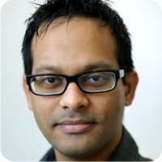

The new frontier of Client Services is AI first

1
Providing exceptional Client Services is key to any organisation’s growth and success, technology already supports these needs and with the advancements in AI this will exponentially improve. As the demands of client relationships grow and advance, technology, and specifically AI will continue to play a significant role in the future of Client Services. Ensuring client health leads to client retention and ultimately organisational growth. Every organisation is already addressing these challenges with the use of technology to support them in achieving those goals, but the new frontier involves bringing more automation into the process to provide client service teams the ability to focus elsewhere.
This isn’t news though, organisations are already fully aware and making strides to take advantage of this, MIT Sloan Management reported that 87% organisations believe AI will give them a competitive edge over their rivals and are taking steps to stay ahead (MIT Sloan, 2019) . Enabling data driven tools which can pull data from current client relationships, AI can predict trends, create alerts and service client needs better. It’s no longer a case of imagining a future where AI automates the day to day tasks, it’s now about utilising the tools available to provide greater visibility into client health and enabling Client Services teams to enhance their offerings. Technology has aided customer experience for a long time, and this is only set to increase as technology advances and customer expectations grow. AI is anticipated to improve employee productivity by nearly 40% according to PWC, despite being human led Client Services are no exception (PWC, 2024). Leveraging AI to improve efficiencies and boost productivity can help eliminate time consuming tasks and reduce workloads to free up time for high value tasks and proactive upselling. It’s no longer a case of whether client service teams can or will use AI, it’s whether organisations can afford to continue not to when the industry has already shifted to AI first.
Creating visibility over client health
Two of the biggest challenges currently facing client service managers are; tracking the health of the client, and having visibility over the interactions and service levels provided by the teams. This challenge is understandably a concern for management level right up to the C-Suite, as ultimately if either of those things suffer, it can directly impact the bottom line. Admin tasks which decrease productivity can eat away at time and potentially result in bottlenecks, slow response times or a drop in client retention. It can also impact whether the Client Services team is able to allocate the necessary time required for pro-active upselling of new products and services which could benefit the client and the organisation. Adopting AI tools to the technology stack which help to execute on productivity tasks for client service teams will improve the core metrics of revenue, retention and client satisfaction. AI tools can use rich data sets unique to each client to provide recommendations based on previous conversations and interactions so client service managers can make informed decisions. All this leads to reducing client churn and increasing client satisfaction aided by invaluable insights, otherwise not available.
AI to enhance the human
AI automation exists to support Client Services teams by improving their productivity. Using data which is client specific and situation relevant, AI tools can free up time and provide opportunities for revenue growth back to organisations. Certain areas of expertise which are human centric, like Client Services, are not likely to ever be fully replaced by AI particularly where human interaction is paramount to the role. What AI can do, is remove or reduce the unwanted tasks which then enhance the agency experience for the client in a seamless way. Automation which is fully based on real time and relevant data, unique to the client, allows client service teams to make informed decisions. Better decision making from teams improves client satisfaction which increases client engagement. Engaged clients will inevitably show greater loyalty and provide great value if the relationship is nurtured. Organisations are already pivoting towards AI supported strategies and this will only continue to grow as more advanced AI tools enter the marketplace and are added to the technology stack.
How AI is changing Client Services
Tracking: Increasing visibility on client health.
Data: Rich data sets informed by actual client data not open source.
Call scripts: Automated call scripts to improve attentiveness.
Insights: Added AI informed visibility into specific client needs.
Automation: Fully autonomous AI agents.
How to engage with AI meaningfully
Offering exceptional Client Services is the bare minimum of every organisation. Organisations are already pulling ahead by using bespoke AI tools to maintain competitive advantage. In a world of increased automation, advancing technology and reduced human interaction, there’s never been more of a necessity to use a sophisticated and dynamic approach to Client Services. AI can help businesses of every organisation to transform their customer experience with significant gains, providing one of the fastest and most effective routes to market for personalised Client Services.